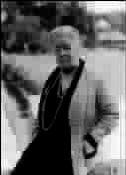

大象从风雪中走来
●赵 恺
概括北欧只需一个短语：蓝色宁静。
蓝色宁静是境界。在北欧，生命即宗教。
穿过蓝色宁静，就是穿过生命的发现和感悟。
全人类共有的启蒙读本有两册：一册是天上的太阳，一册是地上的《安徒生童话》。
高举在卖火柴的小女孩手中的光明，温暖、照耀、引导着人类日益羸弱的爱，小女孩的火柴，是安徒生灵魂的燃烧。
一个人的名字等同甚至超越祖国的，应该首推丹麦的安徒生。丹麦，200多座岛屿舰队一般组成的壮丽王国。安徒生的家乡在一座小岛的一个名叫欧登塞的小镇上。他14岁来到哥本哈根，之后又居无定所，浪迹四方。作为一位作家，他的人生除去作品几乎就是脚印了。
我贴近安徒生，只能以我可能的方式。
按照习惯，踏上一片土地先去寻找土地的灵魂。在市中心广场，我找到那尊举世闻名的铜像。铜像是雕塑家和安徒生面对面的创作。坐姿，侧面，仰首。左手倚杖，右手持书，食指夹在书页之间，铜像整体偏黑间以淡绿，唯有膝部明亮，那一方明亮是时间和孩子一道爬出来的。
跟安徒生合影，众多的等待者沉静而耐心。最多的当然是孩子，依偎安徒生是孩子的特权。
长线码头岸边的美人鱼铜像是另一位雕塑家根据《海的女儿》创作并完成于1913年的作品。作品化金属为血肉，以忧郁之美与裸露之美和大海浑然一体。
夜宿滨海小镇赫尔辛堡，下榻处距离大西洋一箭之遥，距离少年安徒生就读的语法学校也是一箭之遥！
一侧是大海的声音，一侧是安徒生的声音，我倾听博大与博大对话。
韦姆兰省的莫尔巴卡庄园是瑞典女作家、《尼尔斯骑鹅旅行记》作者塞尔玛·拉格洛夫的家。简洁的小楼是抽象的白鹅，楼前的雕塑是具象的白鹅。女作家3岁患骨疾，卧床多年始能依靠手杖前行。如此灾难竟然伴其一生，雪上加霜的是，还在她少年时代，因父亲酗酒卖掉庄园，母亲带着她寄人篱下艰辛度日。边写作，边教书，女作家暗下决心要买回庄园。在担任10年地理教师期间，她写的大量优秀作品蜚声文坛，1904年，获瑞典文学院金质奖章。之后，政府请她写一部关于瑞典风光民俗的文学作品。山一步，水一步，风一步，雪一步，一位病弱女子只身拄杖，以足为掌，两年时间抚遍她的祖国。1907年，她写出了《尼尔斯骑鹅旅行记》。作品问世，风靡欧洲。1909年，作品获得诺贝尔文学奖，她是第一位获得这个奖项的瑞典作家。
她的获奖演说是：“……我已过惯孤独隐遁的生活，尘世喧嚣对于我已是相当陌生了，一想到因为获奖而要我在公众场合抛头露面，一想到又要面对许许多多的人，我就惶恐不安。”
买回庄园，她生活在蓝色宁静中。
孑然一身，她谢世于蓝色宁静中。
我看见手杖和皮鞋。手杖杖端磨损，右脚皮鞋的后跟，比左脚的短了大约两厘米。
对于石头，雕塑家拒绝解释。
192座雕像，600多个浮雕，整体面积32万平方米，维格朗雕塑公园由《生命之桥》《生命之泉》《生命之柱》《生命之轮》四个乐章组成。作品质地为青铜、铸铁和花岗岩，如一部无声的交响诗。
心仪维格朗久矣。
在巴黎，维格朗捧着《生命之柱》石膏小稿奔回祖国，交给奥斯陆市长审读。奥斯陆召开会议讨论并形成决议：故乡支持维格朗，等他毕业，让他实现他的艺术理想。之后，在市郊划出4平方公里的土地并配以3名助手。年轻的维格朗远离喧嚣，厕身荒野，热泪纵横地举起人生第一锤。从1907年到1942年，他孤独而坚忍地在雕塑公园工作了35年。在华彩乐章《生命之柱》完成的第二年，雕塑家耗尽最后一滴心血，斧凿坠地，溘然辞世。
《生命之桥》由58尊雕塑组成，其中一尊是世称代表之作的《愤怒的孩子》。孩子大约四五岁，闭目、张嘴、握拳、顿足，是什么让一个孩子愤怒？满园生命为什么只有孩子敢于愤怒？
对于大象的敬畏是最近几年的事。
一则关于森林的电视节目说到大象，说到欧洲也有大象，说到大象毕生以沉默和跋涉保持尊严，一旦衰老，它就悄然离群索居，直至去世。
从此，我亲近大象雕塑。北极圈附近，有一家旧货商店。
不知是我先发现了它，还是它先发现了我，抑或是我们同时发现了对方，目光一旦邂逅就坪然心动、难舍难弃了：那是一尊大象，一尊象牙雕就的大象。它以纵向扁平和横向弯曲出类拔萃地把自己从恒河沙数一般的造型群落中剥离出来，神情告诉我安详，步态告诉我凝重，遍体洁白告诉我它从风雪深处走来。来自风雪，驻足路边，是为了在这个驿站等待？
店主是一位亲切善良的老妇，为我的感慨而感慨，为我的惊喜而惊喜。
从此，这尊大象就和我魂牵梦萦、形影不离了。
我把大象作为座右铭，并把“以沉默和跋涉保持尊严”命名为“大象守则”。
在飞机离开赫尔辛基的时候，我取出那只铁皮盒子，轻轻打开，大象已经安然入梦。
它的梦，一定是跋涉之梦——在大地上多留一些脚印，与生命同步的沉默跋涉。
(楚天雨摘自《新华日报》2006年10月21日)